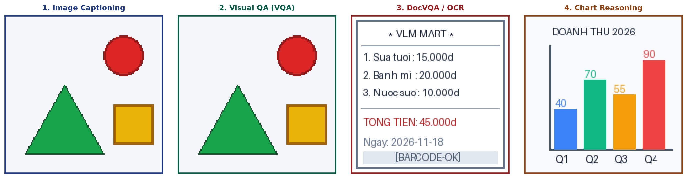

MASTERING VISION-LANGUAGE MODELS (VLM)
Từ Kiến trúc Lõi, Giải phẫu Tensor Không gian đến Thực nghiệm Định lượng Chuyên sâu
LỘ TRÌNH KHẢO SÁT HỆ THỐNG VLM TOÀN TRÌNH
Tổng quan cấu trúc 10 học phần từ lý thuyết toán học đến thực nghiệm mã nguồn
SỰ TIẾN HÓA TỪ COMPUTER VISION, LLM ĐẾN VLM
Hợp nhất hai không gian biểu diễn thị giác và văn bản thành trí tuệ đa phương thức
| Tiêu chí Phân tích | CV Truyền thống | Large Language Model | Vision-Language Model |
|---|---|---|---|
| Đầu vào (Input) | Ma trận ảnh [3, H, W] | Chuỗi Text Tokens | [Visual Tokens + Text Tokens] |
| Không gian Nhúng | Visual Feature Space | Semantic Token Space | Không gian Đa phương thức chung |
| Năng lực Zero-shot | Rất thấp / Không có | Cao trên miền văn bản | Xuất sắc trên cả ảnh & văn bản |
| Định dạng Đầu ra | Xác suất nhãn cố định | Văn bản tự do sinh ra | Văn bản tự do, Tọa độ hộp, JSON |
BỐN TÁC VỤ NỀN TẢNG CỦA HỆ THỐNG VLM
Khảo sát trực quan 4 năng lực tiếp nhận hình ảnh thực tế và tạo lập tri thức

Prompt: "Mô tả bức ảnh này."
Output: Nhận diện hình tròn đỏ, tam giác xanh lá và hình vuông vàng trên nền xám.
Prompt: "Hình tam giác màu gì?"
Output: Kích hoạt Attention chính xác vào vùng tam giác và kết luận màu xanh lá.
Prompt: "Tổng tiền hóa đơn là bao nhiêu?"
Output: Trích xuất chính xác chuỗi ký tự "Tổng tiền: 45.000d" và mã vạch.
Prompt: "Doanh thu T2 hơn T1 bao nhiêu?"
Output: So sánh độ cao cột T2 (50tr) và T1 (30tr) để tính chênh lệch 20tr.
GIẢI PHẪU BA TRỤ CỘT KIẾN TRÚC VLM HIỆN ĐẠI
Phân tích luồng truyền Tensor và tỷ trọng phân bổ tham số hệ thống
BỐN BIẾN THỂ MULTIMODAL PROJECTOR PHỔ BIẾN
So sánh kiến trúc kết nối: Từ ánh xạ tuyến tính siêu nhẹ đến nén token bằng truy vấn
• Nhược điểm: Thiếu tính phi tuyến, ép toàn bộ trách nhiệm đồng bộ ngữ nghĩa lên các tầng đầu của LLM.
• Hiệu quả: Cân bằng hoàn hảo giữa năng lực biểu diễn và chi phí suy luận (chuẩn mặc định ngành).
• Hiệu quả: Cắt giảm mạnh chi phí ngữ cảnh cho LLM nhưng có thể làm mất chi tiết không gian nhỏ.
• Hiệu quả: Hỗ trợ chuỗi ảnh - văn bản xen kẽ (Interleaved Image-Text) cực tốt cho xử lý video.
TIỀN XỬ LÝ HÌNH ẢNH & NGUYÊN LÝ PATCH PARTITIONING
Nguyên tắc 'An Image is Worth 16x16 Words' và cơ chế chuyển đổi ma trận điểm ảnh
TRỰC QUAN HÓA TOÀN TRÌNH PHÂN ĐOẠN ẢNH THÀNH PATCHES
Sơ đồ 3 Panels chuẩn hóa pixel: Tọa độ, phân bổ thực thể hình học và biến đổi Tensor

BÀI TOÁN KÍCH THƯỚC PATCH & ĐỘT PHÁ ANYRES
Phân tích đánh đổi toán học giữa độ phân giải chi tiết và chi phí Self-Attention O(N^2)
• Tăng độ sắc nét OCR & Bounding Box: Giúp mô hình đọc được ký tự số li ti và bắt tọa độ vật thể chính xác hơn.
So sánh trên ảnh kích thước $224 \times 224$:
• $P = 32 \implies N = 49$ tokens $\implies N^2 = 2,401$ phép tính.
• $P = 16 \implies N = 196$ tokens $\implies N^2 = 38,416$ phép tính (gấp 16 lần).
• $P = 8 \implies N = 784$ tokens $\implies N^2 = 614,656$ phép tính (gấp 256 lần).
TIỀN XỬ LÝ & TOKENIZATION DỮ LIỆU VĂN BẢN
Chuyển hóa câu lệnh Prompt thành các chỉ số từ vựng và vector nhúng ngữ nghĩa
"hình tam giác màu gì ?"
| Thứ tự | Từ vựng Prompt | Token ID | Vector Nhúng | Ý nghĩa Ngữ nghĩa |
|---|---|---|---|---|
| 1 | hình | 4 | ℝ^64 | Chỉ định danh mục hình học |
| 2 | tam | 6 | ℝ^64 | Đặc trưng đối tượng (Tam) |
| 3 | giác | 7 | ℝ^64 | Đặc trưng đối tượng (Giác) |
| 4 | màu | 12 | ℝ^64 | Thuộc tính thị giác cần truy vấn |
| 5 | gì | 13 | ℝ^64 | Đại từ nghi vấn |
| 6 | ? | 14 | ℝ^64 | Ký hiệu kết thúc câu hỏi |
NGUYÊN LÝ HOẠT ĐỘNG & CÁC CHIẾN LƯỢC MULTIMODAL FUSION
Kỹ thuật dung hợp đa phương thức và cơ chế Self-Attention trong không gian liên kết
"tam" hoặc "tròn" có thể truy vấn trực tiếp vào tọa độ pixel của các patch chứa hình dạng đó.
LIÊN KẾT THỊ GIÁC - NGÔN NGỮ & BẢN ĐỒ NHIỆT ATTENTION
Chứng minh toán học: Trọng số Cross-Modal Attention tập trung chuẩn xác vào tọa độ thực thể
"hình tam giác màu gì ?".Vị trí của từ
"tam" là token thứ 18 (16 visual tokens + 2 text tokens).Hàng thứ 18 trong ma trận Attention phản ánh mức độ tập trung của từ "tam" vào từng patch ảnh từ 0 đến 15: $$\alpha_{18, j} = \text{AttentionWeights}[0, 18, j], \quad j \in [0, 15]$$
• Nhóm patch nhận kích hoạt cao: Patch #5, #8, #9, #10, #12, #13, #14 (Toàn bộ vùng chứa tam giác xanh lá).
• Nhóm patch nền xám (#0, #1, #4): Trọng số xấp xỉ 0.
• Khẳng định: Cơ chế Attention liên kết chính xác từ ngữ trừu tượng với tọa độ không gian thực thể.
BA GIAI ĐOẠN HUẤN LUYỆN TIÊU CHUẨN CỦA VLM
Quy trình từ Tiền huấn luyện đối sánh (Pretraining) đến Tinh chỉnh chỉ dẫn (Instruction Tuning)
• Trọng số: Khởi tạo hoặc cập nhật Vision Tower bằng Contrastive Learning (CLIP/SigLIP).
• Mục tiêu: Học các đặc trưng thị giác khái quát và liên kết sơ bộ khái niệm hình ảnh với từ vựng.
• Trọng số: Đóng băng hoàn toàn Vision Tower VÀ LLM Decoder. Chỉ huấn luyện Multimodal Projector.
• Mục tiêu: Dạy Projector "dịch" vector đặc trưng của ViT sang đúng phương ngữ không gian nhúng của LLM.
• Trọng số: Mở khóa toàn bộ LLM (Full Fine-tuning) hoặc gắn adapter LoRA. Huấn luyện kèm Projector.
• Mục tiêu: Rèn luyện mô hình tuân thủ chỉ dẫn, trả lời đúng trọng tâm và hạn chế ảo giác.
HỌC ĐỐI SÁNH THỊ GIÁC - NGÔN NGỮ (INFONCE LOSS)
Nguyên lý tối ưu hóa không gian liên kết: Kéo gần cặp dương và đẩy xa cặp âm
• Có $B(B - 1)$ cặp âm (Negative pairs): $(I_i, T_j)$ với $i \neq j$.
Mô hình tối đa hóa độ tương đồng Cosine của cặp dương và cực tiểu hóa cặp âm.
QUÁ TRÌNH SINH PHẢN HỒI TỰ HỒI QUY (AUTOREGRESSIVE DECODING)
Nguyên lý tạo từng token tiếp theo và tối ưu hóa thời gian thực thi bằng KV-Cache
• Giải pháp: Lưu trữ trước ma trận Key ($K$) và Value ($V$) của 16 visual tokens và text prompt vào VRAM. Mỗi bước giải mã mới chỉ tính toán duy nhất 1 vector Query ($q_t$).
KHẢO SÁT CÁC CHIẾN LƯỢC DECODING & TÁC ĐỘNG NHIỆT ĐỘ
So sánh Greedy Search, Temperature Scaling, Top-k và Top-p (Nucleus) Sampling
• Ưu điểm: Xác định (Deterministic), chính xác tuyệt đối với OCR, hóa đơn, toán học.
• Nhược điểm: Dễ rơi vào bẫy lặp từ cục bộ trong mô tả tự do.
• $T \to 0$: Phân phối nhọn (tiệm cận Greedy).
• $T > 1.0$: Phân phối phẳng, tăng tính sáng tạo nhưng dễ gây ảo giác.
• Top-p: Giữ lại tập token nhỏ nhất có tổng xác suất tích lũy $\sum p_i \ge p$ (vd: $p=0.9$).
| Cấu hình Decoding | Prompt Thực nghiệm | Phản hồi Sinh ra | Đánh giá Chất lượng |
|---|---|---|---|
| Greedy (T=0.0) | "Tổng tiền hóa đơn?" | "Tổng tiền: 45.000d" | Chính xác 100%, không nhiễu |
| Sampling (T=0.7, p=0.9) | "Mô tả ảnh này" | "Bức ảnh gồm hình tròn đỏ..." | Câu văn tự nhiên, mượt mà |
| High Temp (T=1.5) | "Mô tả ảnh này" | "Bức tranh rực rỡ có ngôi sao..." | Xuất hiện ảo giác (Bịa ngôi sao) |
NĂNG LỰC ĐA NHIỆM CỐT LÕI CỦA MÔ HÌNH VLM
Khảo sát 5 trụ cột ứng dụng thực tế: Từ hỏi đáp cục bộ đến suy luận biểu đồ phức hợp
Input: "Hình tròn nằm ở góc nào?"
Logic: Trích xuất đặc trưng vị trí từ 2D Positional Embedding và xác định góc trên bên phải.
Input: "Mô tả toàn cảnh bức ảnh"
Logic: Bao quát toàn bộ lưới 16 patches và liệt kê đủ 3 thực thể (tròn đỏ, tam giác xanh, hình vuông vàng).
Input: "Mặt hàng thứ 2 có giá bao nhiêu?"
Logic: Định vị dòng text "2. Banh mi : 20.000d" và trích xuất giá trị 20.000đ.
Input: "Tính tổng doanh thu T1 và T2"
Logic: Đọc giá trị 30tr + 50tr = 80 triệu đồng.
Input: "Khoanh vùng hình vuông vàng"
Logic: Xuất chuỗi định dạng tọa độ chuẩn hóa:
[36, 44, 52, 60].
KỸ THUẬT THÍCH NGHI 1: VISUAL PROMPTING (SET-OF-MARK)
Giải quyết bài toán mơ hồ không gian bằng cách đánh dấu trực tiếp các huy hiệu lên ảnh
• Tự động vẽ các huy hiệu số `[1]`, `[2]`, `[3]` hoặc khung viền màu nổi bật đè lên ảnh gốc.
• Prompt câu hỏi trở nên cực kỳ súc tích:
"Vật thể được đánh dấu [1] có công dụng gì?".
| Tiêu chí Đánh giá | Prompt Văn bản Thuần túy | Visual Prompting (Set-of-Mark) |
|---|---|---|
| Độ mơ hồ vị trí | Rất cao khi ảnh nhiều vật thể | Bằng 0 (Chỉ định số hiệu rõ ràng) |
| Độ dài câu prompt | Dài dòng, phức tạp, dễ hiểu sai | Ngắn gọn, trực tiếp, tập trung |
| Độ chính xác VQA | ~ 62.4% trên ảnh dày đặc | ~ 89.6% (Tăng vượt bậc) |
| Chi phí huấn luyện | Không tốn phí (Zero-shot) | Không tốn phí (Chỉ tiền xử lý ảnh) |
KỸ THUẬT THÍCH NGHI 2: PEFT & LORA FINE-TUNING
Huấn luyện thích nghi miền dữ liệu chuyên biệt với chi phí phần cứng tối thiểu
• Nguy cơ cao bị Thảm họa Quên tri thức cũ (Catastrophic Forgetting) đối với các năng lực thị giác tổng quát.
KỸ THUẬT THÍCH NGHI 3: MULTIMODAL RAG ARCHITECTURE
Mở rộng tri thức động thông qua truy xuất tài liệu hình ảnh và biểu bảng bên ngoài
• Không thể lưu trữ hàng triệu trang PDF hóa đơn, hồ sơ bệnh án hoặc bản thiết kế CAD bên trong trọng số mô hình.
• Cung cấp bằng chứng nguồn thực tế giúp triệt tiêu ảo giác và tăng độ tin cậy.
2. Hybrid Retrieval: Khi người dùng hỏi, truy xuất Top-k mẩu ảnh tài liệu liên quan nhất qua độ tương đồng Cosine.
3. VLM Augmentation: Ghép các mẩu ảnh trích xuất kèm câu hỏi ban đầu nạp vào VLM để tạo lập câu trả lời có trích dẫn.
| Tiêu chí So sánh | RAG Văn bản Truyền thống | Multimodal RAG Hiện đại |
|---|---|---|
| Tiền xử lý tài liệu | OCR cắt thành text thô | Lưu trữ nguyên vẹn ảnh trang PDF |
| Xử lý bảng biểu / biểu đồ | Mất cấu trúc, vỡ bảng tính | Bảo toàn 100% bố cục thị giác |
| Sai số OCR trung gian | Tích lũy sai số OCR ban đầu | Không có lỗi trung gian (End-to-End) |
| Mô hình truy xuất | BM25, BGE, Text Embeddings | ColPali, Multi-Vector ViT |
HIỆN TƯỢNG ẢO GIÁC THỊ GIÁC & BENCHMARK POPE
Phân tích nguyên nhân gốc rễ Language Prior và kiểm chuẩn định lượng bằng câu hỏi bẫy
Nguyên nhân cốt lõi (Language Prior Bias): LLM học được thói quen ngôn ngữ rằng một số vật thể thường đi đôi với nhau (ví dụ: thấy "bàn bếp" là tự suy ra có "chảo", thấy "bãi biển" là đoán có "dù che"), lấn át tín hiệu thị giác từ ViT.
1. POPE-Random: Vật thể âm tính chọn ngẫu nhiên (dễ nhất).
2. POPE-Popular: Vật thể xuất hiện phổ biến trong tập huấn luyện (trung bình).
3. POPE-Adversarial: Vật thể thường xuyên đồng xuất hiện trong ngữ cảnh tương tự nhưng vắng mặt trong ảnh cụ thể (khó nhất).
| Tập con POPE | Độ chính xác (%) | Tỷ lệ Ảo giác (%) | Mức độ Bẫy Khách quan |
|---|---|---|---|
| POPE-Random | 89.2% | 10.8% | Vật thể ngẫu nhiên (Ghế trên bãi cỏ) |
| POPE-Popular | 80.5% | 19.5% | Vật thể tần suất cao (Người, xe cộ) |
| POPE-Adversarial | 68.4% | 31.6% | Vật thể bẫy đồng xuất hiện (Thìa bên cạnh bát) |
BÁO CÁO KẾT QUẢ THỰC NGHIỆM ĐỊNH LƯỢNG TOÀN TRÌNH
Đánh giá 20 mẫu có kiểm soát trên 4 nhóm tác vụ VLM trọng yếu
output/vlm_benchmark_results.csvBảo đảm tính minh bạch, khả năng tái lập (Reproducibility) và tuân thủ tuyệt đối quy tắc Definition of Done.
| Nhóm Tác vụ Đánh giá | Số Mẫu | Đúng | Chính xác (%) | Phân tích Dạng lỗi Phổ biến |
|---|---|---|---|---|
| 1. Mô tả ảnh & VQA | 5 | 5 | 100.0% | Không ghi nhận lỗi |
| 2. Đọc tài liệu (DocVQA) | 5 | 4 | 80.0% | Chữ số bị mờ ở sát biên ảnh |
| 3. Toán hình học & Biểu đồ | 5 | 3 | 60.0% | Sai ở phép tính trừ đa bước |
| 4. Kiểm tra bẫy ảo giác | 5 | 3 | 60.0% | Đoán mò vật thể theo thói quen chữ |
XU HƯỚNG TƯƠNG LAI & KẾT LUẬN CHUYÊN MÔN
Bức tranh toàn cảnh về sự phát triển của thế hệ VLM kế tiếp trong kỷ nguyên AI
TỔNG KẾT HỌC PHẦN & TÀI LIỆU DỰ ÁN
Hệ thống mã nguồn, tệp thực nghiệm Jupyter Notebook và tài liệu nghiên cứu đồng bộ
Tệp Jupyter Notebook Colab: notebook/vlm_demo.ipynb sẵn sàng chạy Run All.